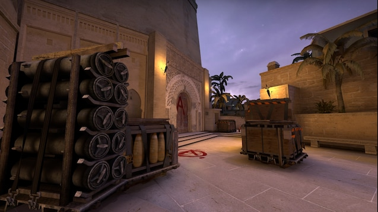
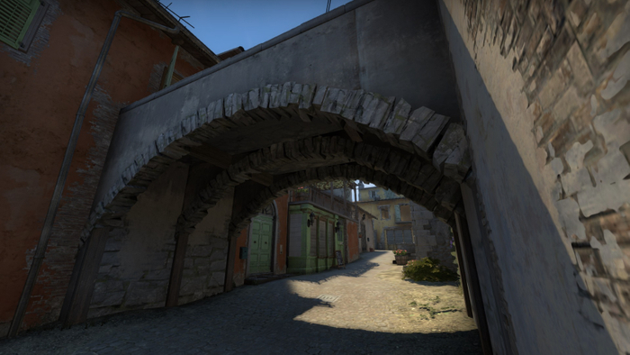
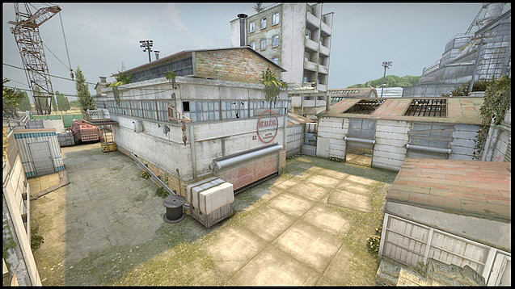
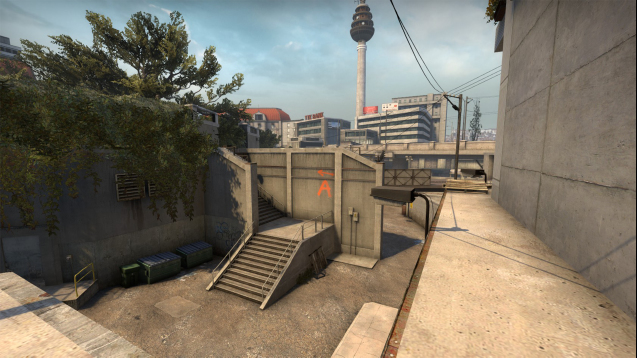
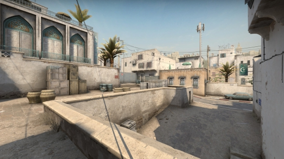

Mirage
Да, да – мы имеем в виду именно Mirage. В официальных серверах Steam каждый второй ждет своей очереди сыграть на ней карте. С выходом CS GO в 2013 году карта попала в официальный мап-пул. Однако, справедливости ради, стоит напомнить, что в более ранних частях шутера Mirage являлась кастом-картой. Однако это не помешало ей получить статус одной из наиболее часто разыгрываемых. Нередко Мираж критикуют за то, что играть на ней слишком уж легко. И нет особого накала. Как известно, карта предусматривает три основные зоны: A, B и MID. Основные бои разворачиваются на точках закладки бомб (A и B), а MID является наиболее открытым местом. Хотя по первах может сложится ложное впечатлени, что сражаться проще простого, это единственная КС ГО карта, которая удостоилась быть разыгранной на всех больших турнирах по CS GO. Антураж свидетельствует о том, что действия разговаривают где-то на Ближнем Востоке или Юге Европы. Поэтому если ваши планы на летний отдых накрылись, в качестве компенсации можете запустить бой в данной локации.
Страшно даже представить, но этой карте КС ГО двадцать с лишним лет. Своему появлению она обязана CS 1.1. Сегодня Inferno – это одновременно карта-ветеран и сильная атмосферная локация. Чтобы выполнить миссию, вы не только должны знать, как преодолевать коридоры и тупики, но и обязаны осматриваться сверху. Карта предусматривает либо быстрое столкновение обеих команд на Банане (основной проход для террористов, чтобы установить бомбу в Зоне Б), либо игру в прятки в извилистых коридорах жилого квартала. В принципе, Инферно или “ад”, можно отнести к топ карты hide and seek CS GO. Действия проходят в испанской или итальянской глубинке. Особый колорит придают то тут то там бегающие курицы, однако разработчики устранили их курятник и птички остались без дома. Здесь и там привлекают наши внимание диковинные детали – например, улица рядом с Бананом называется Via Adamo, что является данью королю Банана Адам «friberg» Фрибергу, сегодняшнему звезде команды Dignitas.
Inferno
Cache
В отличии от двух предыдущих, Cache – относительно новая карта. Она была добавлена в шутер вместе с выходом Global Offensive и за последние семь лет претерпела значительную переработку. Автором Cache является некий человек под ником FMPONE. Это он так реалистично воссоздал город-призрак Припять, где в 1986 году произошел взрыв одного из реакторов атомной электростанции. Поистине уникальная карта в постапокалиптическом жанре заслуженно считается одной из любимых. Согласно легенде, на полуразрушенных энергоблоках остались тайники с оружием. Предотвратить подрыв сможет только спецназ.
Overpas . Впервые карта Overpass появилась в мап-пуле Counter-Strike: Global Offensive вместе с в релизом обновления “Winter Offensive”. Сегодня это одна из наиболее успешных карт последней версии франшизы CS. Действия разворачиваются в Берлине. По задумке террористы пытаются подорвать грузовик на скоростной эстакаде. В качестве поля битвы выступает городская инфраструктура: муниципальный парк, водопроводный канал и сама эстакада. На карте имеются динамичные объекты. Так, недалеко от точки B иногда проезжает поезд, который издает характерный этому транспортному средству гул, а также может помешать докинуть гранату. Многие игроки очень нравится карта Overpass, поскольку она сочетает в себе дальние и средние дистанции на открытом пространстве.
Overpass
Dust
Нужно ли кому-то в 2020 году вообще рассказывать чем является карта Dust II? Если твои друзья поигрывают в контру, то среди них обязательно найдется хотя бы один фрик, который играет ТОЛЬКО на этой карте. Даст 2 настолько легендарна и незаменима, что успела сильно поднадоесть профессиональным киберспортсменам. Последние отправили ее в небытие и больше не разыгрывают на Мажорах. Однако любители затерли бы Даст 2 до дыр, не была бы она виртуальной. Разработчики постарались сделать Даст 2 достаточно сбалансированной, благодаря чему ее так полюбили пользователи. Действия происходят в Марокко. Прорисованные до мельчайших деталей элементы архитектуры и декорации знакомят нас в культурой Магриба. А игроки невольно становятся героями одной из сказок тысячи и одной ночи, пусть даже и очень кровавой.